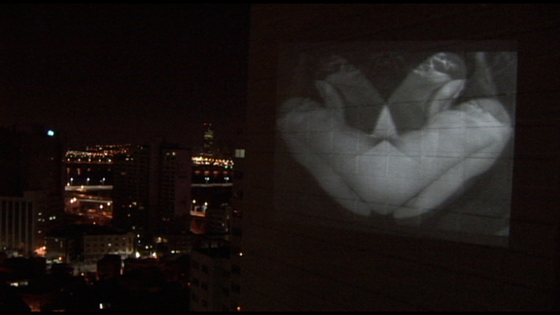
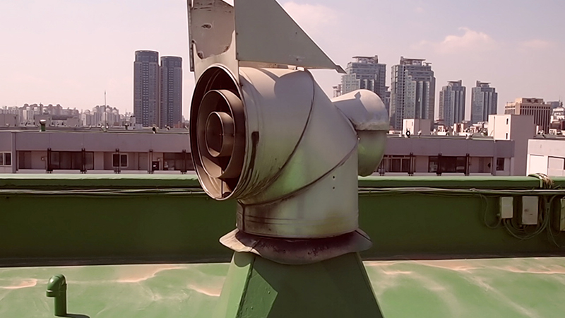
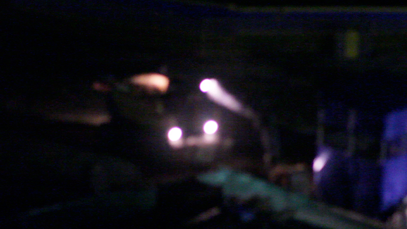
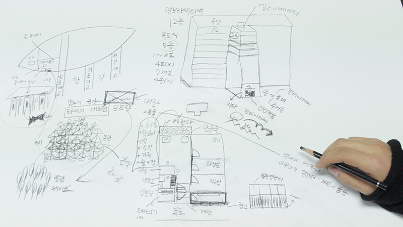
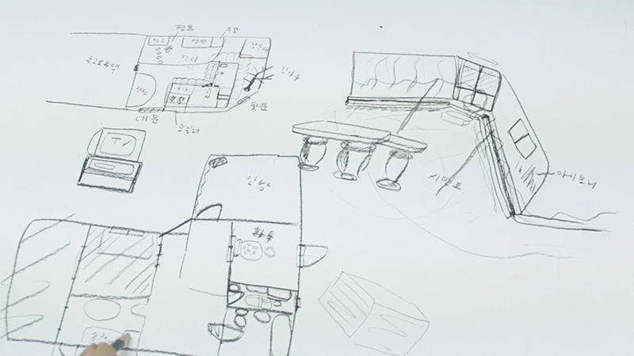
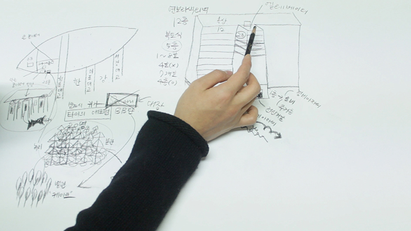
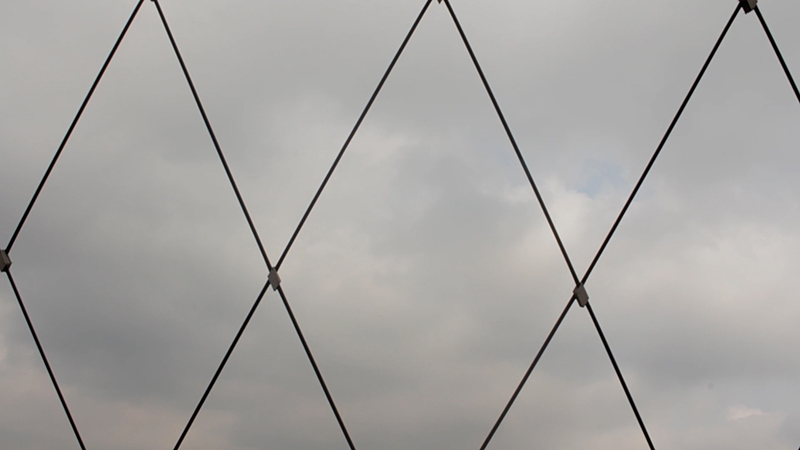

- 2013. 8. 9. 20:00
- 인사미술공간 Insa Art Space
- 이소의 Lee So-eui
- 쉴 새 없이 부수고 만드는 건축물 탓인지, 공간의 기억은 쉽게 새겨지고 쉽게 사라진다. 역사적 사실조차 소설로 이용되는 오늘, 이소의가 바라는 것은 표류하는 공간 속 기억의 복원과 유지이다. 작가는 단순히 ‘여기에 있었다.’ 라는 사실 이면의 것들을 카메라에 담는 데에 관심이 있다.
- <After our times>, 4'49'', 2010
- 몸의 기억들을 공간에 새기고자 한다. 박제되는 몸의 기억을 형상화하기 위해 나의 누드사진을 콜라주/패턴화해 영상편집 후, 빔프로젝터를 이용해 아파트 벽에 출력했다.
- <도시위에서 Going City>, 2'5'', 2011
- 도시의 한복판, 아파트 옥상에 올라서니 환풍기만 소리 없이 고개를 젓는다. 권태로워 보이는 환풍기는 뭔가 열심히 말을 하는 것 같지만 들리지 않는다.
- <나를 바라보지 말아요 Don’t look at me>, 2012
- 재개발되기 전의 상수동에 살던 사람들의 기억에 대한 미련으로부터 출발했다. 이는 <헬싱키가 되고 싶던 상수동이었던 독막로길> 연작 일부분이다.
- <메모리아 Memoria - 00시 00구 00동 project>, 2'48'', 2009
- | - 서울시 영등포구 여의도동, 11'3'', 1986-2002
- | - 서울시 양천구 목동, 9'57'', 1997-2000
- | - 공주시 봉황동, 9'7'', 1988-1992
- 공간을 매개로 한 타인의 기억을 따라가며 인터뷰를 했다. 나는 그들의 지난 이야기를 따라가며 물리적, 심리적으로 사라진 그 공간을 추적해 간다.
- <구구구 coo coo coo>, 3'37'', 2013
- 기억이 이쪽과 저쪽을 연결 짓는 다리(bridge) 언저리를 부유한다. 무언가 찾고자 하지만 가 닿을 수 없는 그 것. 그리고 그것이 놓인 경계를 포착하고자 한다.
-

-

-

-

-

-

-
